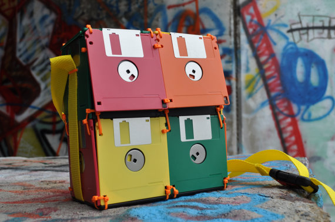

Artesanato pode ser feito com material produzido pelo descarte de equipamentos eletrônicos. Além de contribuir com o meio ambiente, peças eletrônicas se transformam em verdadeiras obras primas nas mãos dos artesãos.
Confira também outras maneiras de reaproveitamento:
- Aproveitar componentes que ainda funcionam.
- Criar oportunidades para a reutilização de peças.
- Possibilitar a inclusão digital, social em comunidades carentes.
- Ultilizar como matéria prima em artesanato e oficinas sócio-educativas
- Decoração
© 2014 Site desenvolvido por Diogo Paradela e Anderson Ramos